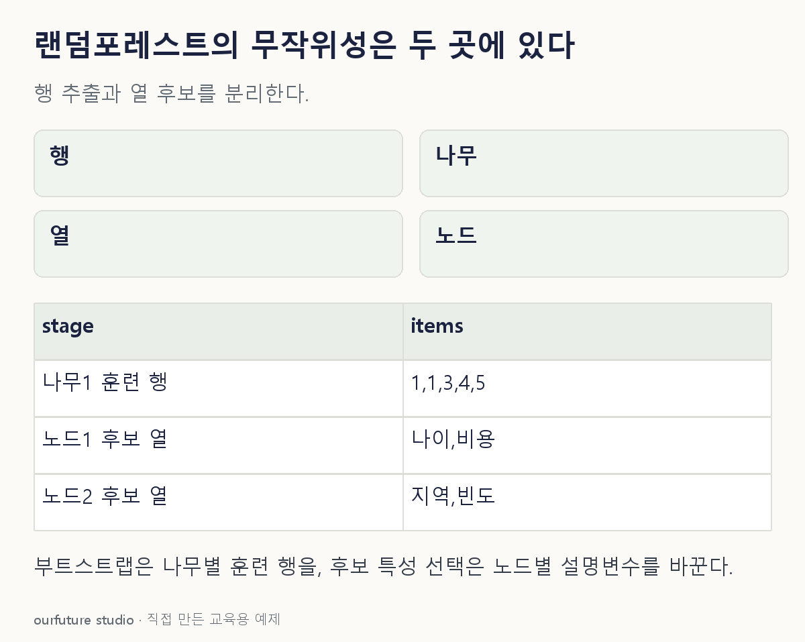

조건을 바꾸며 확인하기
가능한 집합 수다. 실제 모든 집합의 출현·성능 개선을 보장하지 않으며 구현의 유효 분할 검색 횟수 상한으로 쓰지 않는다.
설명 그림과 비교하기
아래 그림과 표는 고정된 설명 예제입니다. 기본·변형 중 어떤 조건인지 캡션을 읽고, 바꾼 입력의 결과는 계산 칸에서 확인하세요.

같은 문제를 직접 골라 보기
랜덤포레스트의 노드별 분할 후보 특성을 무작위로 선택하는 설정을 생각한다.
조건을 더 바꾸면?
가능한 특성 5개에서 순서를 무시하고 후보 2개를 고르는 조합은 몇 개인가?
변형 풀이 확인
10개.
5×4/2=10이다. 이는 가능한 후보 집합 수이며 실제 포레스트가 모두 한 번씩 사용한다는 뜻은 아니다.
행은 나무별로, 후보 열은 노드별로.